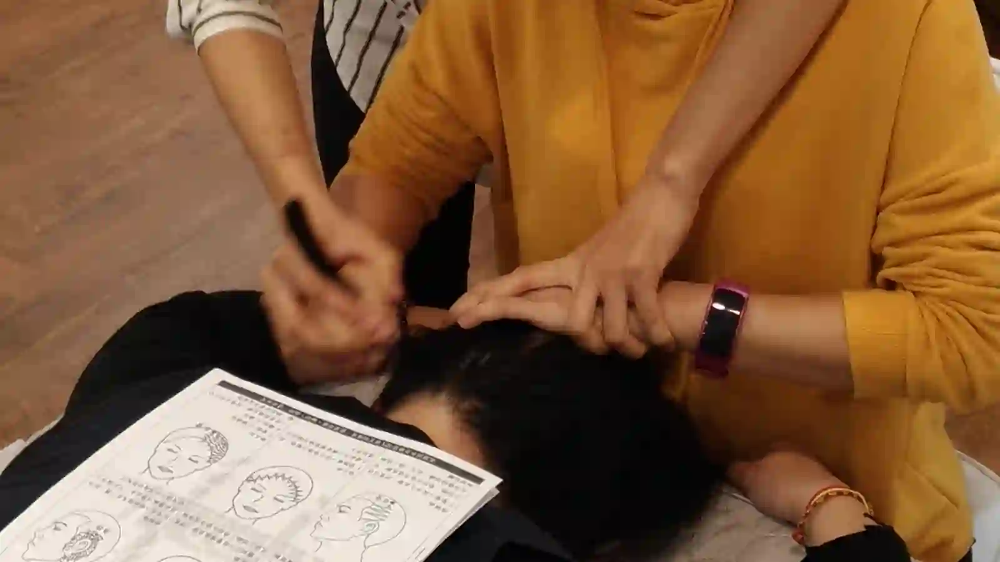

The Bojin Journal · Jaw & Chin
Pebble Chin or Dimpled Chin? The Small Muscle Behind It

You’ve seen it in a photo, or caught it in the bathroom mirror at the wrong angle: the skin on your chin looking faintly bumpy, like orange peel or a golf ball. It shows up more when you’re concentrating, and more still when you’re trying not to cry.
A pebbly, dimpled chin usually comes from the mentalis, a small muscle at the point of your chin that stays tense even at rest. It isn’t a skin flaw, which is why texture creams rarely change it. Gentle self-care about twice a week, about a minute per side, can help the chin sit softer at rest for a while. Injections from a dermatologist relax the muscle itself. This is self-care, not medical care.
Almost nobody talks about the chin. It gets lumped in with the jawline or ignored, and women who notice this texture often assume it’s a skin problem and buy the wrong products for it. You may also see it called a cobblestone chin or an orange-peel chin. It’s the same thing.
Why the chin puckers
There’s a small muscle right at the point of your chin called the mentalis. Its job is to push the middle of your lower lip up and out: the movement behind a pout, a pursed expression, and the face you make when you’re holding something back.
When that muscle contracts, it pulls the skin over it into small dimples. That’s the pebbly texture. Over time it can learn to stay slightly contracted all day, so the dimpling shows even when you aren’t making any expression. Two habits often feed it: clenching your jaw, and holding your lips tight while you concentrate.
“At first, almost no one can find the bone edge. They work in the wrong spot, because they’re afraid to press.”Yu-Ting Lan, on new students working the jaw and chin
Pebble chin, chin dimple or cleft chin?
These get mixed up online. Only one of them is about muscle tension:
| What you see | What it usually is | Can self-care change it? |
|---|---|---|
| Bumpy, orange-peel texture across the chin, even at rest | Pebble chin: the mentalis staying tense | It can soften the resting tension for a while |
| Dimpling only when you pout, purse or hold back tears | Normal muscle movement | Nothing to fix |
| One vertical groove or a single dent in the middle | A cleft or dimple in the chin’s shape | No; it’s structure, not tension |
Why it shows more after 50
The muscle hasn’t necessarily changed much. The skin over it has. It’s thinner and less springy, so the puckering that used to smooth out right away now lingers. Some of the soft padding over the chin thins out too, so there’s less to cushion the pull. Add a few decades of the same expression, and a dimpled chin at rest becomes common.
Habits that keep the chin tense
Most of the holding happens without you deciding to. These four habits come up again and again in my classes:
- Clenching while you concentrate. Reading, driving, a hard email. Check whether your back teeth are touching; at rest they shouldn’t be.
- Pressing your lips together at a screen. The lower lip pushes up and the chin follows. Let your lips rest lightly, just touching.
- Holding back emotion. The “brave face” is a chin face. You don’t need to change your feelings, only notice the squeeze afterward and let it go.
- Clenching in your sleep. If you wake with a tired jaw, mention it to your dentist; a night guard is their call, not ours.
A 10-second chin check
Stand at a mirror in even light and let your whole face go slack. Then check two things:
- At rest: is the pebbling there when you aren’t making any expression? If it only appears when you pout or purse your lips, that’s normal movement.
- Your lips: do they meet without effort? If you have to push your chin up to close them, the chin muscle is working overtime. That’s worth mentioning to your dentist, because tooth and jaw position can play a part.
One honest note: your fingertips, and most home tools, mostly move the top layer of skin, a millimeter or two deep. A chin that stays tense often has a jaw that clenches behind it. That’s why the gentle line below works along the jaw, not only on the chin itself.
What can help, honestly
| Approach | What it works on | What to expect |
|---|---|---|
| Texture creams and exfoliants | The skin surface | Little change, because the cause is the muscle |
| Gentle self-care (fingertips or a bojin stick) | Resting tension in the jaw and chin | A softer-looking chin at rest, gently and temporarily; about twice a week |
| Noticing the habit | Clenching and lip tension through the day | Less holding over time; costs nothing |
| Injections from a dermatologist | The muscle itself | A medical procedure; ask a professional what’s right for you |
Bojin sits alongside professional care, not instead of it. If the texture bothers you enough that you want more than that, a dermatologist is the right person to ask.
One gentle line tonight
Start with the jaw, where the chin’s tension usually connects. Trace the lower edge of your jawbone with a fingertip: the line of bone that runs from your chin back toward your ear. Press just enough to feel the bone; it should never hurt. With a little cream, glide lightly along that edge, from beside the chin to the soft hollow just behind your earlobe. About a minute per side, slow and comfortable.
Then let your lower lip go completely slack for a few seconds. For the next few days, notice where your lower lip is when you concentrate. If it’s pushed up and tight, let it drop.
See this line drawn on a face, with its start and end points, on the Jaw & Chin guide. It’s one line of a longer routine; the full method works the face in a set order.
Honest expectations, and a safety note
Expect a chin that feels softer and looks a little smoother at rest, gently and temporarily. Don’t expect the texture to disappear, and be skeptical of anything that promises it will.
Quick answers
What is a pebble chin?
A pebble chin (also called a dimpled, cobblestone or orange-peel chin) is a bumpy texture on the skin of the chin. It usually comes from the mentalis, a small muscle at the point of the chin, pulling the skin into tiny dimples.
What causes a dimpled chin?
Mostly a chin muscle that stays slightly tense even when your face is at rest, often alongside jaw clenching or habitual lip tension. Thinner, less springy skin with age makes the dimpling linger longer.
Can you soften a pebble chin without injections?
Gentle self-care can ease the resting tension so the chin sits softer for a while; the effect is temporary and builds with consistency. It won't match what an injection does to the muscle itself. If you want more than a temporary change, talk to a dermatologist.
Is a dimpled chin a sign that something is wrong?
Usually not; it's a muscle habit. But if your lips don't close comfortably at rest and you have to push your chin up to seal them, mention it to your dentist. A sudden change, numbness or pain is a reason to see a doctor.
How often should I practice?
About twice a week, about a minute per side, with light pressure. The chin sits over bone with little padding, so use less pressure than you would on a cheek.
Find out where your jaw holds the most
The 1-minute Face Tension Profile checks five areas of your face and neck, including the jaw, and shows your result on screen. No email needed. If you want to see the method’s pace first, the free 1:18 demo shows Yu-Ting working above the brow.
Take the 1-minute Face Tension ProfilePart of the Jaw & Chin guide: a 10-second check, the starting route, and related guides for this area.
Yu-Ting Lan is a Taiwan-based international bojin instructor and the founder of Héhé Studio. She has taught her bojin method to more than a thousand students, from complete beginners to grandmothers, across Taiwan, Hong Kong and Malaysia.